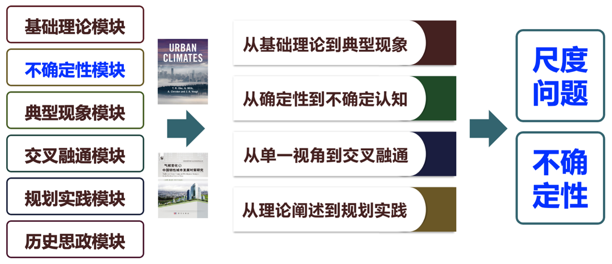

2025秋 · ESE50074.01 · 余兆武
来源：复旦教务系统教学大纲，本轮使用已授权账号下载。原始正文与考核信息；去除联系方式和网页脚本，内嵌图片按原字节去重保存。
本课程教学内容包括城市气候、城市生态系统的基本概念、方法、进展、基本原理；辐射与城市能量平衡；城市水文过程、大气水分、成云与降雨过程；城市气候背景与空气污染；城市与全球气候变化；气候敏感性设计等内容。其中包括安排有4-8学时野外考察、VR、无人机进行城市气候观测、案例分析以及学生研讨等互动环节。
This course covers fundamental concepts, methodologies, advancements, and principles in urban climate and urban ecosystems. Key topics include:
Instructional Approach:
The curriculum integrates interactive components such as:
本课程紧扣我校作为综合性、研究型的“双一流”高校，培养环境科学与工程学科（国家A级学科）“气候变化与碳中和”方向具有国际视野、专业素养、文理工兼通的领军人才目标的重要支撑课程。课程目标包括“知识—能力—思维”三个层级。
知识目标：理解城市气候的基本理论与关键概念，构建课程核心框架逻辑，并进一步辩证理解城市与气候变化内在关联及气候敏感性规划原理。
能力目标：学生能掌握运用包括热红外无人机、谷歌云计算平台、虚拟仿真技术与气候模拟软件的基础上运用所学知识进行不同尺度的气候敏感性规划设计，解决实际问题。
思维目标：培养学生在面对不确定性问题进行探索、辩证与系统思考与分析能力，并运用多学科知识解决复杂的问题能力。
课程具体方案如下：
1、构建了一个系统化、层次分明的课程体系。通过突出课程的核心要素，帮助学生抓住关键点，形成清晰的知识结构。
2、结合笛卡尔方法论，鼓励学生自主学习确定性知识。结合AI技术，运用翻转课堂，引导学生通过自主探索学习不确定性问题。
3、利用虚拟仿真平台等先进技术，使学生不仅能学习理论知识，还能培养实际操作能力。
4、学生通过无人机数据采集、ENVI-met模拟与虚拟仿真呈现，提升解决具体的问题能力。
5、通过介绍科研先驱创新企业案例，激发学生将论文写在祖国大地上的责任感与科技创新的必由之路。

教学内容安排 （具体到每节课内容）
1) 第一周 绪论(Introduction)：介绍城市生态系统、城市新陈代谢、城市与乡村的概念；城市发展对环境的影响（城市土壤圈与岩石圈、水圈、生物圈、城市大气等）；城市化与城市形态（城市化发展阶段与未来城市化道路）；规划气候韧性的城市（可再生与不可再生资源、城市生态足迹）。阐述本课程的基本结构与内在逻辑
2) 第二周 基本概念(Concept)：城市气候系统基本概念“城市表面（城市陆地-大气界面的定义、城市单元的分级、城市地标属性的描述、城市表面分类）、城市大气（城市气候现象的尺度、城市大气的垂直结构、关联垂直结构与水平尺度）、定义城市气候”、分类方法、表面结构的尺度等阐述及讨论
3) 第三周 方法(Method)：城市气候研究观测方法介绍。包括外场观测（仪器及其暴露环境、固定站测量、移动观测、气流跟踪技术、遥感技术）、物理模拟（缩放与相似性、实验室模拟、室外物理模拟、）、数值模拟（控制方程、数值试验的设计、微尺度与局地尺度城市气候模式、中尺度城市气候模式）、经验模型。
4) 第四周 气流(Airflow)：风与湍流的基础知识（平均场与湍流部分、湍流的产生、湍流的耗散）；粗糙子层中的气流（孤立建筑物、均一建筑物阵列、街道与交叉路、非均一高度和高大建筑物阵列、空间平均场流雨湍流统计）、惯性子层中的气流（平均风廓线、城市地表粗糙度、湍流与湍流交汇、局地尺度平流）、混合层中的气流（粗糙度影响、热力影响）
5) 第五周 辐射(Radiation)：辐射交换与辐射收支的基本概念（辐射的基本概念、辐射物质相互作用、地表能量平衡）；城市冠层中的辐射（冠层的辐射特性、孤立建筑、城市街谷、城市系统的反照率与发射率）；城市边界层内的辐射（城市气溶胶、短波辐射、长波辐射）；表面全波段净辐射通量
6) 第六周 能量平衡(Energy Balance)：能量输入与能量平衡基础（平坦地面的能量平衡、城市系统及其单元的能量平衡）；人为热通量（人为热通量估算、控制因子、重要性）；储热变化（储热变化的调控、估算与模拟、典型值）；湍流热通量（湍流热输送模型、湍流热通量的测量、控制）；城市能量平衡示例（各组成面的能量平衡、建筑物的能量平衡、城市街谷的能量平衡、城市冠层的 能量平衡、城乡能量平衡）
7) 第七周 城市热岛(Urban Heat Island)：城市温度与热岛类型（地表温度、大气温度、地下温度、热岛强度）；地表城热岛（观测、空间与时间变化、成因）；冠层城市热岛（观测、空间形态、最大冠层城市热岛、日变化、天气与地表状况的影响、季节性变化、冠层热岛的成因）；边界层城市热岛（空间结构、变化率、成因）；地下城市热岛。本周将安排校园热环境实践与考察
8) 第八周 城市水文(Water)：地表水文学与水平衡基础（水循环与地表水平衡）；城市水文单元的水平衡城市集水区的发展、城市集水区的水平衡、城市街区的水平衡、整个城市水平衡）；城市对水平衡组分的影响（降水、管道供水、人为水汽、蒸发、径流、储存变化、地下水）
9) 第九周 大气水分(Atmospheric Moisture)：大气水分的基本概念（湿度、凝结等）；城市对湿度的影响（城市冠层、城市边界层、城市效应的影响机理）；城市对凝结的影响（露、雾）
10) 第十周 云与降水(Clouds and Precipitation)：云与降水形成的基本原理（暖云过程、冷云过程、雷暴）；方法学上的挑战（云与降水的离散特征、云与降水的观测、）；城市观测（云、降水、雪与冻雨）；城市效应的假设（湿度及热动力过程的影响、动力过程变化、微物理过程变化）
11) 第十一周 空气污染(Air Pollution)：空气污染的基本原理（排放、散布与输送、清除与转化、空气污染的尺度）；城市微尺度与局地尺度空气污染（室内空气污染、城市冠层中的室外空气污染、高架点源排放的空气污染）；城市尺度空气污染（城市边界层中空气质量的气象调控、烟雾、城市空气污染模拟）；城市空气污染的区域与全球效应（城市羽流、城市污染物对下游生态系统的影响）
12) 第十二周 宏观影响因子(Geographical Controls)：城市的大气候背景环境（城市人口与大气候、不同大气候的城市效应、不同大气候下的地表能量平衡、不同大气候下的热岛效应）；地形（地形对气流的机械影响下的城市、地形气流热效应影响下的城市、海岸风系影响下的城市、多种地形下的城市气流）；天气的控制（风暴系统、洪水、热浪）
13) 第十三周 城市与全球气候变化(Cities and Global Climate Change)：城市对全球气候系统的影响（土地覆盖变化、温室气体、）；城市的温室气体排放（城市地区的碳追踪、城市温室气体排放的直接测量、城市土地覆盖与温室气体交换）；城市环境内的全球气候变化（在城市环境内监测气候变化、城市区域未来气候预测）
14) 第十四周 人类的气候(Climates of Humans)：基本概念（热量管理、维持体态平衡）；人体能量平衡（体内能量交换、外部能量交换、辐射收支、感热通量、潜热通量）；热胁迫与人体应变；热舒适及其评估（室内、室外、热指数）；风与舒适度；城市对人类气候的影响（微气候、小区、城市尺度）；室内气候
15) 第十五周 气候敏感性规划设计(Climate-Sensitive Planning)：气候敏感性城市规划与设计基本概念（政治背景与政策机理、气候评估、指导原则）；不同尺度的设计干预措施（城市尺度、社区尺度、组成面、建筑、街道与城市街区、树木、花园与公园、作为设计元素的水体）；理想城市（资源利用、舒适、空气质量、极端天气）
16) 第十六周 开卷考试。
17) 第十七-十八周 批改试卷
余兆武等，基于自然的解决方案：基本原理与应用，复旦大学出版社，2024
[原版] T.R. Oke, G. Mills, A. Christen and J.A. Voogt. Urban Climate, Cambridge University Press, 2017
[译版] 苗世光等.城市气候，气象出版社，2020
| 项目 | 比例 | 评定说明 |
|---|---|---|
| 出勤Attendance | 10.0% | 出勤率 |
| 汇报Presentation | 20.0% | 小组汇报情况 |
| 课堂表现Participation | 10.0% | 是否积极发言 |
| 期末考试Final Examination：开卷 | 60.0% | 开卷卷面成绩 |